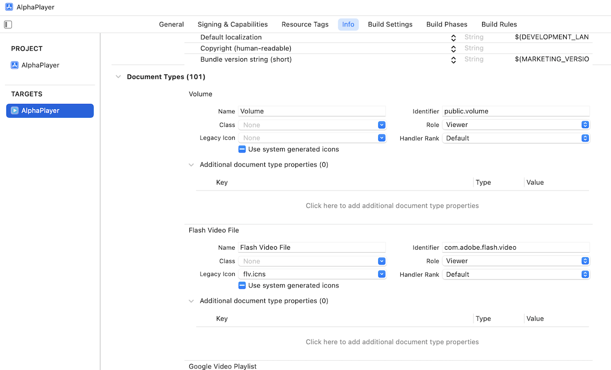
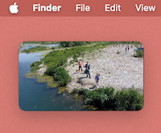
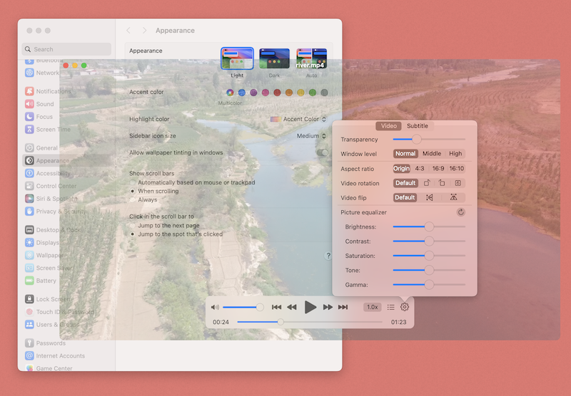
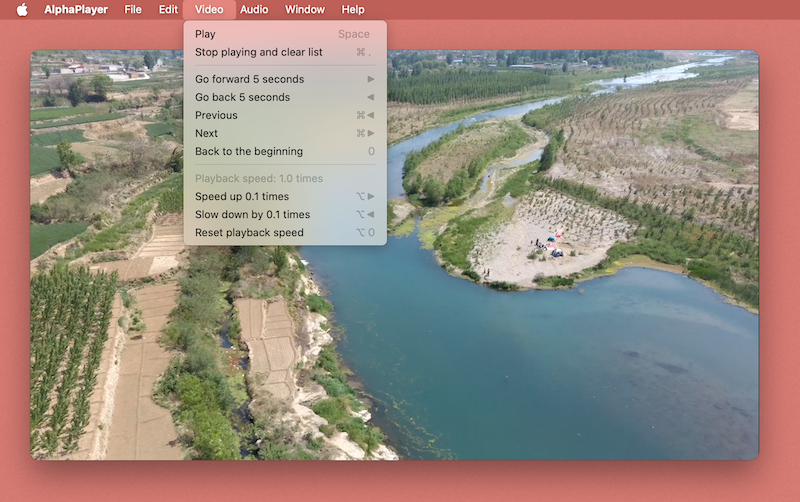
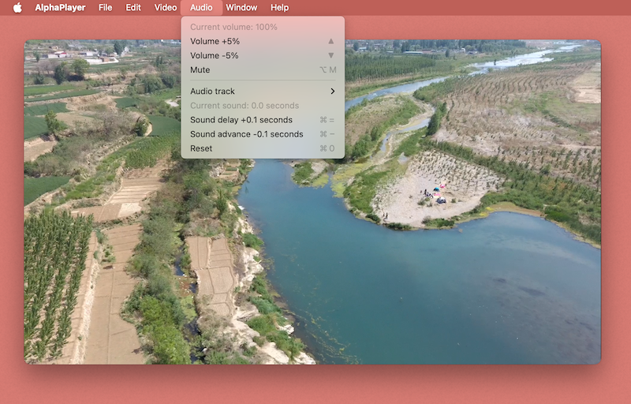
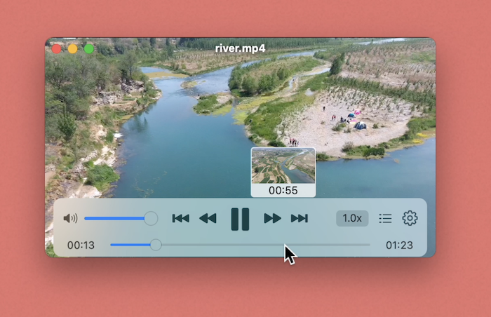
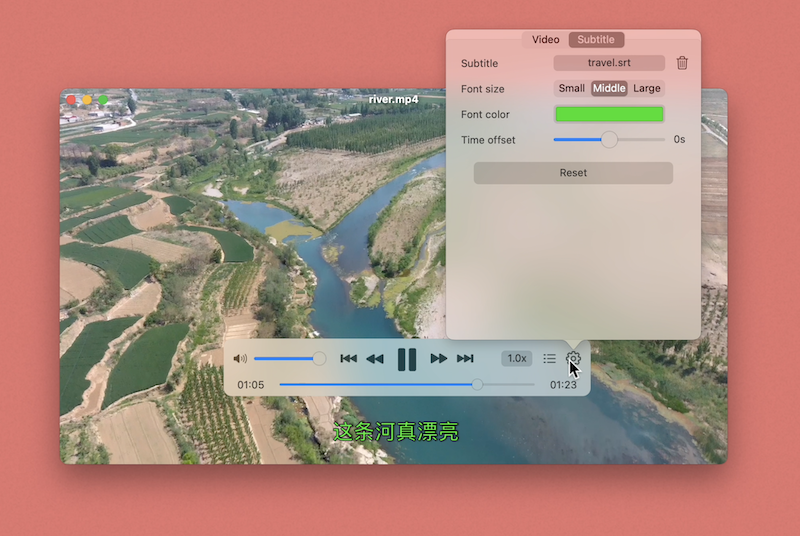

AlphaPlayer

Features
This is a versatile player that can set window transparency
You can let it play any audio and video format(up to 101 formats are supported).
You can resize the window arbitrarily, even to thumb size.
Adjust the transparency of the window so that others cannot notice that you are watching the video.
Set the window level so that the window can be displayed on top and not blocked by other windows.

You can control all functions of the player through the keyboard, including play, pause, fast forward, volume, accelerated playback, etc
 Quick preview function allows you to quickly check and find the location you want to play.
You can add subtitles to the video and set the display style of the subtitles (font size, color, time offset).
You will definitely like the simple music playback interface.

Other features
AirPods headset control, 200% volume, 3x playback speed, playlist (single loop, random, infinite loop), video ratio settings, picture rotation, picture flip (horizontal flip and vertical flip), picture balance settings.